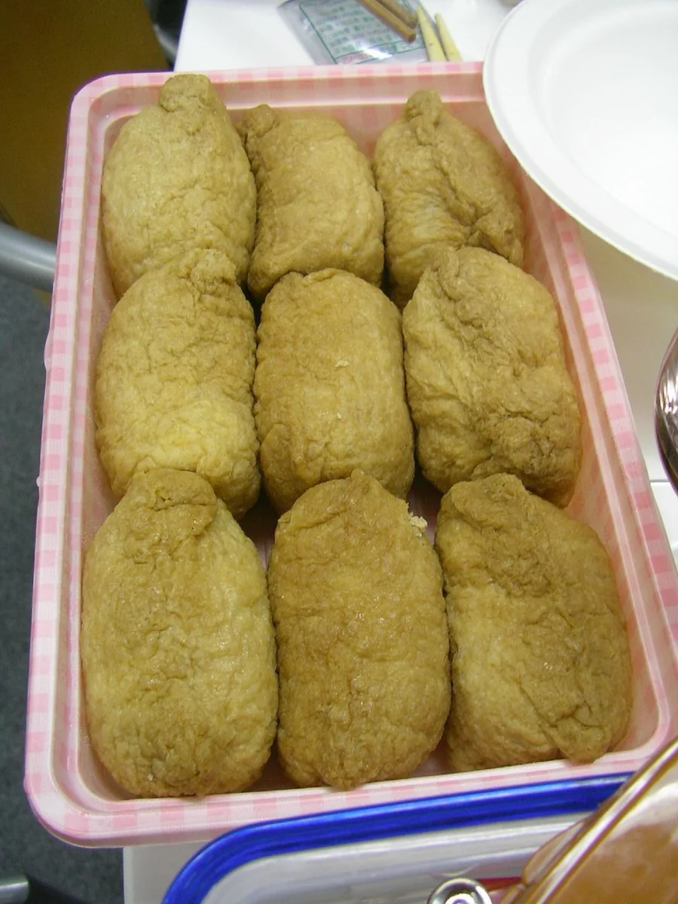
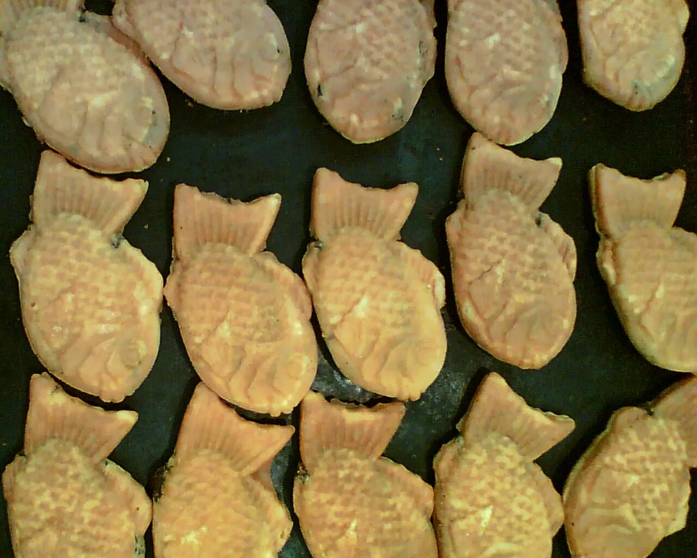
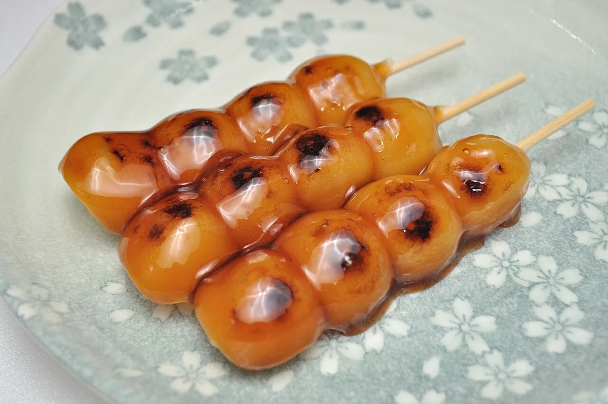
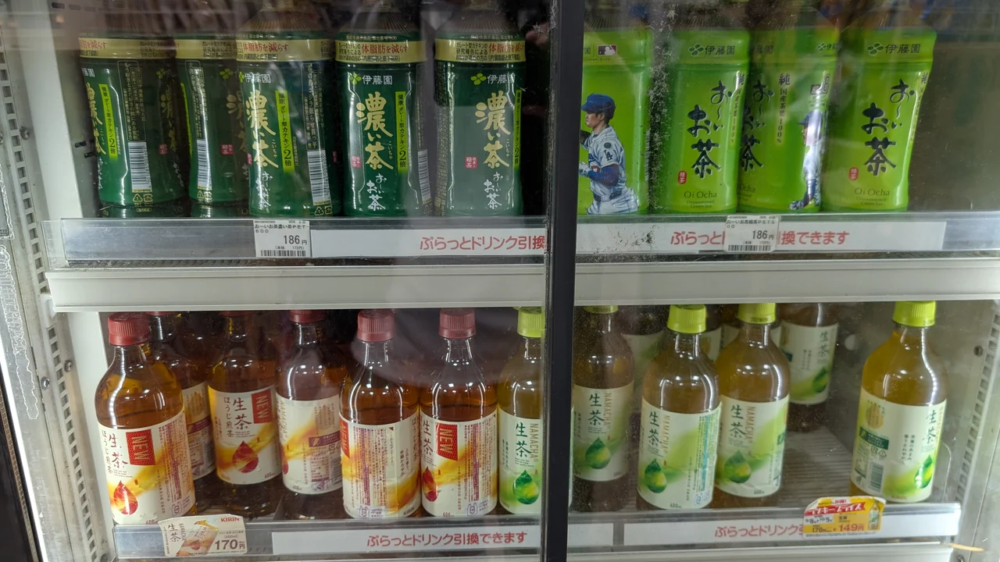
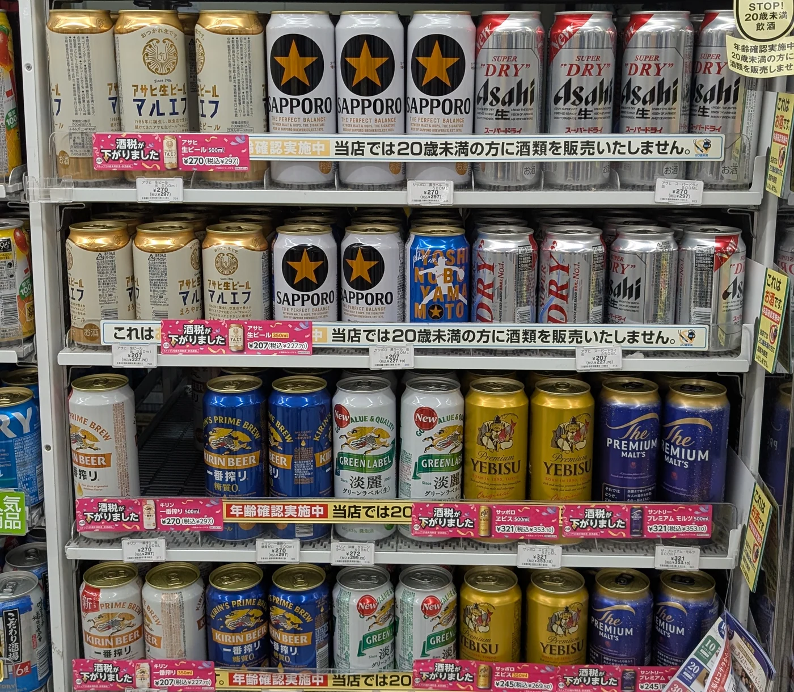

KLEINE SNACKS, KLEINE ENTDECKUNGEN
Beginne mit etwas, das deinen Blick einfängt.
Im Bahnhofsladen, im Supermarkt oder an einem Stand im Viertel kann eine unbekannte Form der Anfang einer schönen Entdeckung sein. Hier findest du Namen, Aromen und kleine Hinweise für den ersten Bissen.
01 / REIS FÜR UNTERWEGS
Ein kleines Päckchen Reis.
Zwei vertraute Formen. Zwei ganz unterschiedliche Bissen.
REISBÄLLCHEN · HERZHAFT
Onigiri
おにぎり
Von Hand geformter Reis, oft mit Füllung und umwickelt mit Nori Algen. Dreieckig, rund oder irgendwo dazwischen: Onigiri gibt es in mehr als einer Form.
Was steckt drin? Wähle ein Etikett aus.
Lachs: würzige Fischflocken im Reis.
Wie öffne ich die nummerierte Verpackung?
- 1Ziehe die obere Lasche nach unten und einmal um das Reisbällchen herum.
- 2Ziehe die Verpackung vorsichtig an einer Seite ab.
- 3Ziehe die andere Seite heraus, sodass der Nori um den Reis bleibt.
Diese Anleitung gilt für die bekannte dreiteilige Dreiecksverpackung. Folge den Zahlen und Hinweisen auf deiner Packung; andere Verpackungen werden anders geöffnet.
Leitfaden der Universität Tokio · S. 29 ↗
TOFUTASCHE · SÜSS UND HERZHAFT
Inari-Sushi
いなり寿司
Leicht gesäuerter Reis in einer weichen Tofutasche, die in süßer Sojasoße geschmort wurde. Die goldene Hülle ist Tofu und kein Teigmantel.
Schau genauer hin. Die Form kann länglich oder dreieckig sein; manchmal sind Sesam oder Gemüse im Reis.
Inari-Sushi von innen · Kikkoman ↗02 / WARM UND HERZHAFT
Folge dem Dampf.
Ein weiches Hefebrötchen oder eine kleine Schale vom Grill. Nimm dir Zeit zum Genießen.
GEDÄMPFTES BRÖTCHEN · WEICH UND HERZHAFT
Nikuman / Butaman
肉まん / 豚まん
Ein weiches gedämpftes Brötchen mit würziger Schweinefleischfüllung. In Kansai, der Region um Osaka und Kyoto, begegnet dir oft die Bezeichnung Butaman.
Der Name verrät etwas. 肉 bedeutet Fleisch; 豚 bedeutet Schweinefleisch. Gemüse und Würzung unterscheiden sich je nach Laden.
In Osaka begegnet dir vielleicht 551 HORAI: Die Schweinefleischbrötchen kombinieren gewürfeltes Schweinefleisch und Zwiebeln mit leicht süßlichem Teig.
Schweinefleischbrötchen aus Osaka · Osaka Tourismus (Japanisch) ↗Schweinefleischbrötchen von 551 HORAI (Japanisch) ↗
OKTOPUS-HÄPPCHEN · OSAKAS LIEBLING
Takoyaki
たこ焼き
Runde Teigbällchen mit Oktopus, gebacken in einer Pfanne mit kleinen Mulden. Typische Toppings sind Soße, Algenflocken und Bonitoflocken; manche Varianten enthalten auch Mayonnaise.
Lass dir beim ersten Bissen Zeit. Frisch zubereitete Takoyaki können innen sehr heiß sein. Eine kleine Portion ist eine schöne Pause bei einem Bummel durch Osaka.
Manche Läden backen sie außen knusprig, andere lassen sie weicher. Verschiedene Läden auszuprobieren macht gerade den Reiz aus.
Takoyaki aus Osaka · Osaka Tourismus (Japanisch) ↗03 / EINE SÜSSE PAUSE
Etwas Süßes vor dem nächsten Halt.
Ein Kuchen in Fischform. Ein glänzend glasierter Spieß. Lass dich von der Form leiten.

FISCHKUCHEN · SÜSSE FÜLLUNG
Taiyaki
たい焼き
Der Fisch beschreibt die Form. In diesem kleinen Kuchen steckt oft süße rote Bohnenpaste, genannt Anko. Andere Füllungen wie Vanillecreme sind ein weiterer Grund, einen Blick auf die Karte zu werfen.
Ein Name zum Wiedererkennen. あんこ ist süße Bohnenpaste. Sie kommt in vielen japanischen Süßspeisen vor – vielleicht entdeckst du sie heute zum ersten Mal.
Japanische Süßigkeiten · JNTO ↗
REISKLOẞE · SÜSSE SOJAGLASUR
Mitarashi-Dango
みたらし団子
Kaubare Reisklößchen am Spieß, überzogen mit glänzender, süßer Sojasoßenglasur. Die Sojasoße ergänzt die Süße um eine herzhafte Note.
Achte auf dieses Wort. 団子 bedeutet dango. Die goldbraune Glasur kennzeichnet die Sorte Mitarashi; andere Dango haben andere Toppings.
Mitarashi-Dango · Kikkoman (Japanisch) ↗ZEIT FÜR DEIN ESSEN
Für die Fahrt oder einen Halt unterwegs.
Onigiri lassen sich gut mitnehmen. Für warme Brötchen und Takoyaki solltest du vor dem Einsteigen in der Nähe des Ladens eine Pause einlegen: Ihr Duft kann Sitznachbarn stören. Wähle einen Ort, an dem Essen erlaubt ist, und beachte die örtlichen Hinweise.
Geschmack, Füllungen und Zutaten variieren. Lies die Verpackung oder frage im Laden nach Zutaten, die für dich wichtig sind.
ETWAS ZU DEINEM HÄPPCHEN
Ein Bissen. Ein Schluck. Eine kleine Pause.
Grüner Tee zum Onigiri, Kaffee zur Süßigkeit oder japanisches Bier zu etwas Herzhaftem. Finde ein Getränk für deinen nächsten Snackstopp.

TEE, KAFFEE UND MEHREtwas zum TrinkenEntdecke die Aromen im Regal.Japanische Getränke entdecken
BIER ZUM ESSENLerne japanisches Bier kennenVertraute Lagerbiere und die Brauereien dahinter.Japanisches Bier entdeckenFotos: Michikusa.
Quellen und Bildnachweise
Diese Fotos zeigen Beispiele und nicht die aktuelle Speisekarte eines bestimmten Ladens. Über die verlinkten Quellen erfährst du mehr über die Gerichte.
Quellen zu den Speisen
- Onigiri-Füllungen · Japanische Botschaft, S. 13 ↗
- Nummerierte Onigiri-Verpackung · Universität Tokio, S. 29 ↗
- Inari-Sushi · Web Japan ↗
- Butaman · Osaka Tourismus (Japanisch) ↗
- Zutaten von 551 HORAI (Japanisch) ↗
- Takoyaki · Taste of Japan ↗
- Taiyaki · JNTO ↗
- Mitarashi-Dango · Kikkoman (Japanisch) ↗
Bildnachweise
- onigiri — Ocdp. Originalfoto · CC0. Auf maximal 1.200 px Kantenlänge verkleinert und in WebP umgewandelt; keine Bildretusche. Mit responsivem Zuschnitt dargestellt.
- inari — jetalone. Originalfoto · CC BY 2.0. Auf maximal 1.200 px Kantenlänge verkleinert und in WebP umgewandelt; keine Bildretusche. Mit responsivem Zuschnitt dargestellt.
- nikuman — 鈴音雨. Originalfoto · CC BY 4.0. Auf maximal 1.200 px Kantenlänge verkleinert und in WebP umgewandelt; keine Bildretusche. Mit responsivem Zuschnitt dargestellt.
- takoyaki — sayo ts. Originalfoto · CC0. Auf maximal 1.200 px Kantenlänge verkleinert und in WebP umgewandelt; keine Bildretusche. Mit responsivem Zuschnitt dargestellt.
- taiyaki — SLPTWRK. Originalfoto · CC BY 2.0. Auf maximal 1.200 px Kantenlänge verkleinert und in WebP umgewandelt; keine Bildretusche. Mit responsivem Zuschnitt dargestellt.
- Mitarashi-Dango — Ocdp. Originalfoto · CC0. Auf maximal 1.200 px Kantenlänge verkleinert und in WebP umgewandelt; keine Bildretusche. Mit responsivem Zuschnitt dargestellt.